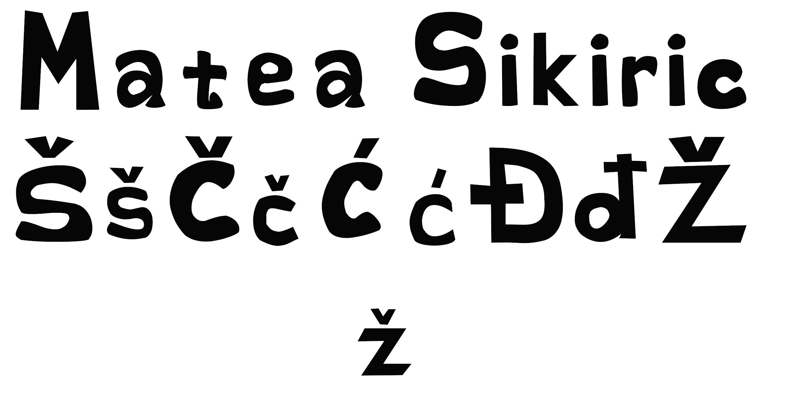
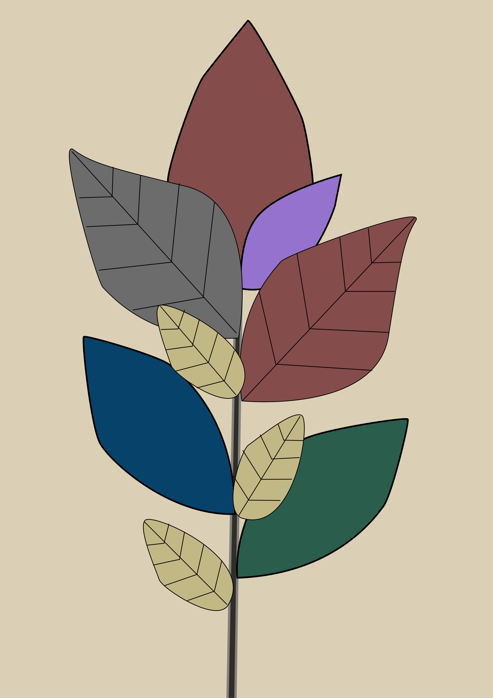
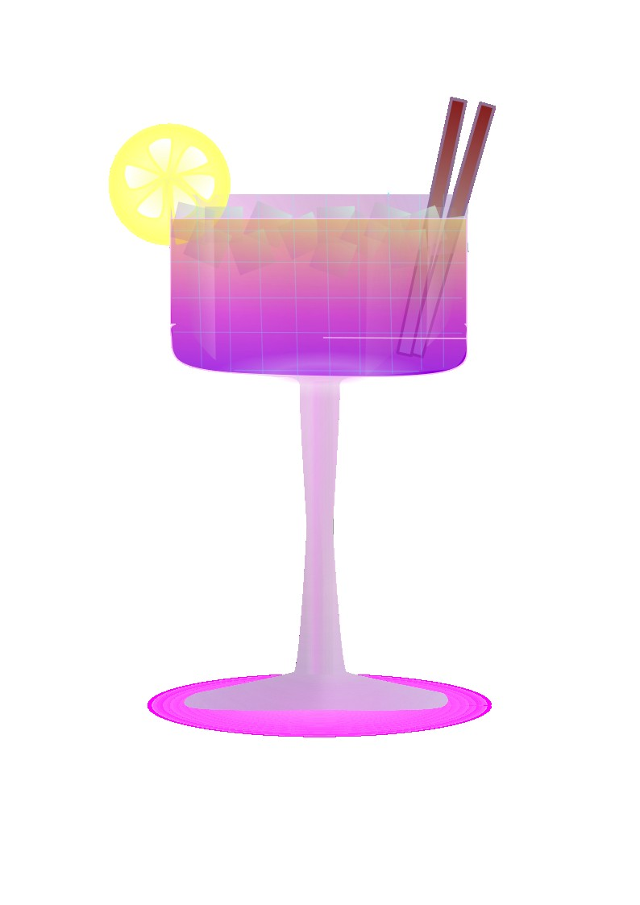
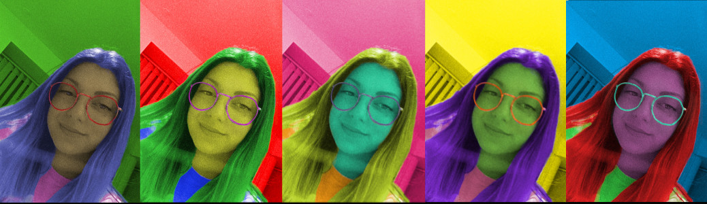
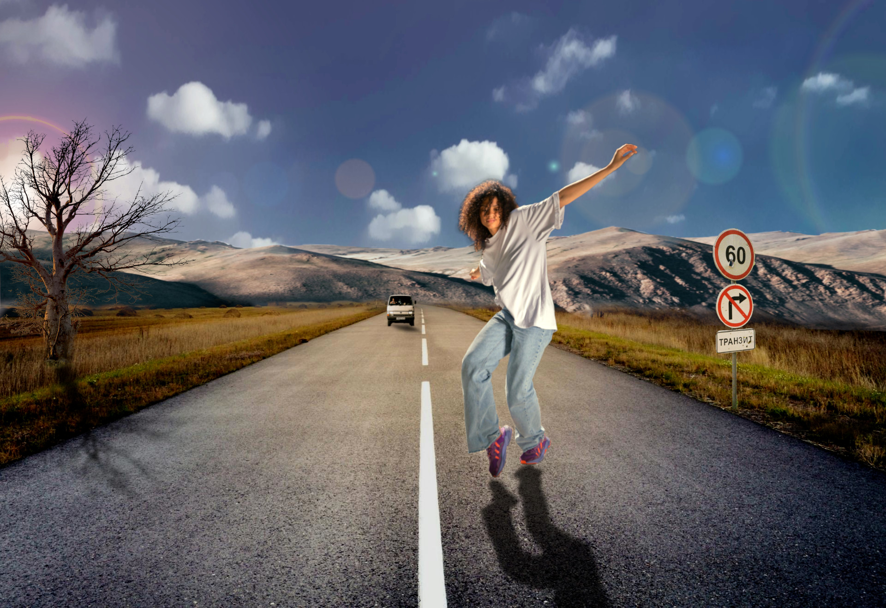

Vježbe
FontForge
 U ovoj vježbi koristila sam program FontForge kako bih dizajnirala vlastiti font.
Fokusirala sam se na izradu svog imena i prezimena te slova s kvačicama poput č, ć, ž, š,
vodeći računa o proporcijama, ravnoteži i čitljivosti slova.
Svako slovo je ručno oblikovano kako bi imalo prepoznatljiv karakter i ujednačen stil.
Inkscape
U ovoj vježbi sam koristila program Inkscape za kreiranje inicijala koristeći krivulje.
Cilj je bio savladati alat za crtanje i manipulaciju Bezierovim krivuljama te stvoriti atraktivan i jedinstven dizajn
inicijala koji se može koristiti u različitim grafičkim projektima.

U ovoj vježbi sam nacrtala i obojala sliku u programu Inkscape.
Cilj je bio naučiti koristiti alate za crtanje, bojanje i uređivanje vektorske grafike te replicirati zadani primjer sa svim detaljima i bojama.

Za ovu vježbu sam u programu Inkscape samostalno nacrtala i obojala vlastiti objekt.
Cilj je bio primijeniti naučene tehnike crtanja i bojanja, koristiti krivulje i alate za oblikovanje te stvoriti originalni dizajn.
GIMP

Za ovu vježbu sam odabrala jednu sliku koju sam uredila u programu GIMP.
Cilj je bio poboljšati boje, ukloniti nedostatke i doraditi sliku kako bi izgledala kvalitetnije i profesionalnije.

U ovoj vježbi sam koristila program GIMP za koloriranje jedne iste slike u pet različitih boja.
Cilj je bio eksperimentirati s bojama, razumjeti kako mijenjati tonove i stvarati različite vizualne efekte koristeći iste oblike.

Za ovu vježbu sam koristila GIMP i na odabranu pozadinsku sliku dodavala različite elemente.
Također sam koristila sjene i druge efekte da bih sliku učinila što realističnijom i vizualno zanimljivijom.
Shotcut

Za ovu vježbu sam koristila program Shotcut za izradu GIF-a.
Cilj je bio naučiti kako iz videozapisa izvući kratku animaciju i spremiti je kao GIF format,
koji se može koristiti na web stranicama i društvenim mrežama.